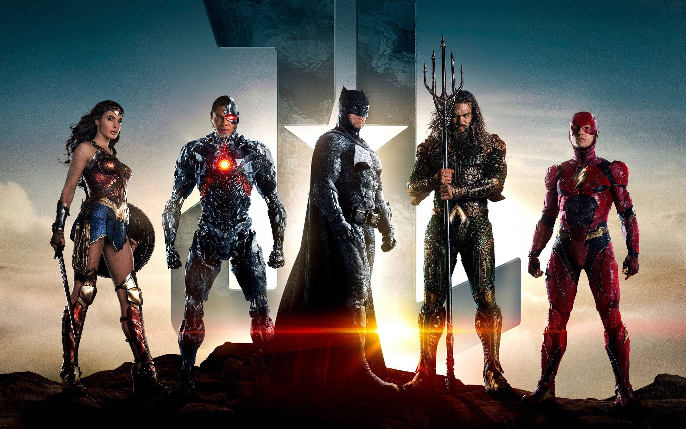

Batman
In the name of his murdered parents, Bruce Wayne wages eternal war on the criminals of Gotham City. He is vengeance. He is the night. He is Batman.
One of the most iconic fictional characters in the world, Batman has dedicated his life to an endless crusade, a war on all criminals in the name of his murdered parents, who were taken from him when he was just a child. Since that tragic night, he has trained his body and mind to near physical perfection to be a self-made Super Hero. He's developed an arsenal of technology that would put most armies to shame. And he's assembled teams of his fellow DC Super Heroes, like the Justice League, the Outsiders and Batman, Incorporated.
Superman
Faster than a speeding bullet, more powerful than a locomotive… The Man of Steel fights a never-ending battle for truth, justice, and the American way.
From his blue uniform to his flowing red cape to the "S" shield on his chest, Superman is one of the most immediately recognizable and beloved DC Super Heroes of all time. The Man of Steel is the ultimate symbol of truth, justice, and hope. He is the world's first Super Hero and a guiding light to all.
Wonderwoman
Faster than a speeding bullet, more powerful than a locomotive… The Man of Steel fights a never-ending battle for truth, justice, and the American way.
From his blue uniform to his flowing red cape to the "S" shield on his chest, Superman is one of the most immediately recognizable and beloved DC Super Heroes of all time. The Man of Steel is the ultimate symbol of truth, justice, and hope. He is the world's first Super Hero and a guiding light to all.